คู่มือใช้งานเครื่องมือ · ระดับ Free
แผนภูมิไซโครเมตริก
Psychrometric Chart & Air Properties
FREE
สำหรับช่างเทคนิคที่เพิ่งเริ่มงาน — อ่านแล้วทำตามได้เอง
ใช้เวลาฝึกประมาณ 60 นาที
เคสตัวอย่าง: อาคาร A อากาศภายนอก 35 °C RH 60 % · คอยล์เย็น 5,000 m³/h
อ.หนึ่ง กลับทวี / Aj. Nueng Klubtavee
tripleeenergytools.com
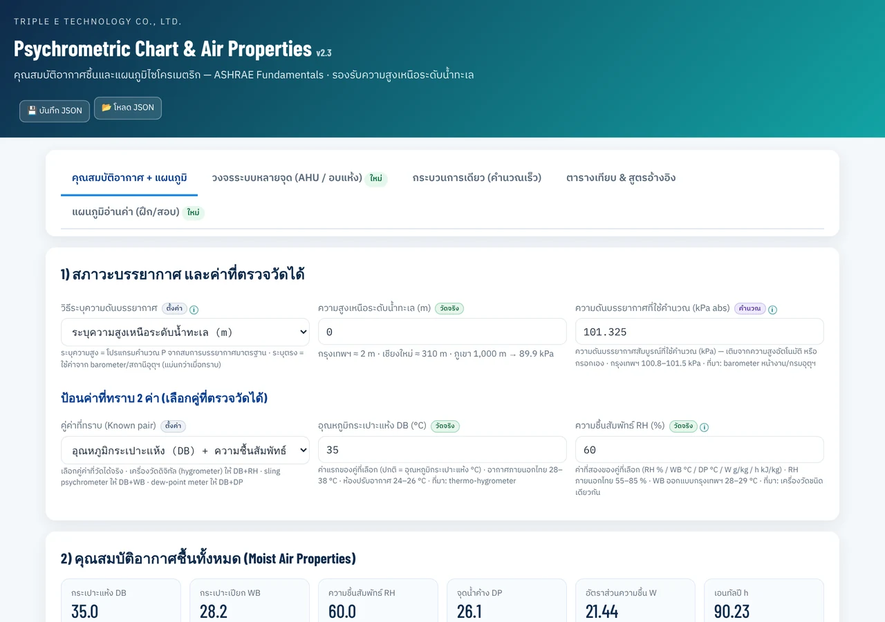
หน้าจอเครื่องมือ — เปิดได้จากเมนู Free ของเว็บไซต์
รุ่นเครื่องมือ: v2.3 · Free commit 8a6bc96 · จับภาพ 16 พ.ย. 2569 · คู่มือ Rev01
เครื่องมือนี้ตอบคำถามอะไร
คู่มือใช้งาน · แผนภูมิไซโครเมตริกและคุณสมบัติอากาศ (Psychrometric Chart & Air Properties) · ระดับ Free
2 / 30
| คำถามหน้างาน | ใช้แท็บไหน | เคสอาคาร A ได้ |
|---|---|---|
| วัดอุณหภูมิกับความชื้นได้แล้ว อากาศมีน้ำอยู่เท่าไร จุดน้ำค้างเท่าไร | คุณสมบัติอากาศ + แผนภูมิ | W 21.44 g/kg · DP 26.1 °C |
| คอยล์เย็นตัวนี้รับภาระกี่ kW กี่ตัน | กระบวนการเดียว (คำนวณเร็ว) | 36.92 kW = 10.50 TR |
| น้ำทิ้งจากคอยล์ชั่วโมงละกี่ลิตร | กระบวนการเดียว | 19.74 kg/h |
| ทั้งระบบ AHU: ลมภายนอก ผสม คอยล์ ห้อง ภาระแบ่งอย่างไร | วงจรระบบหลายจุด | คอยล์ 71.60 kW = ห้อง 43.00 + ลมภายนอก 25.80 + อื่น ๆ 2.80 |
| สูตรและตารางอากาศอิ่มตัว | ตารางเทียบ & สูตรอ้างอิง | — |
| อยากฝึกอ่านแผนภูมิด้วยมือ / ทำข้อสอบ | แผนภูมิอ่านค่า (ฝึก/สอบ) | โจทย์สุ่มพร้อมเฉลย |
💡 เคล็ดลับ
เครื่องมือนี้ไม่มีปุ่มคำนวณ — ผลและแผนภูมิเปลี่ยนทันทีที่พิมพ์
แผนที่หน้าจอ
คู่มือใช้งาน · แผนภูมิไซโครเมตริกและคุณสมบัติอากาศ (Psychrometric Chart & Air Properties) · ระดับ Free
3 / 30
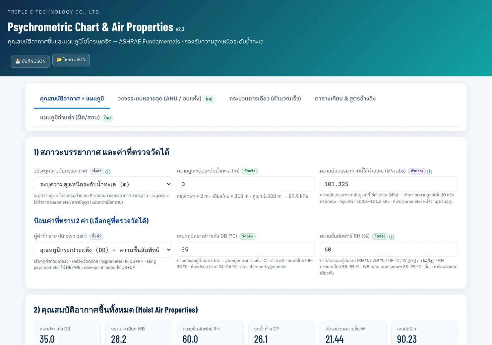
1
2
3
4
5
1
บันทึก JSON · โหลด JSON — เก็บค่าทุกแท็บ
2
แท็บ 5 แท็บ
3
ความดันบรรยากาศ (จากความสูงของพื้นที่)
4
เลือกคู่ค่าที่วัดได้ แล้วกรอก 2 ค่า
5
ผล: คุณสมบัติอากาศทั้งหมด
💡 เคล็ดลับ
เริ่มที่แท็บแรกเสมอ — ความดันบรรยากาศที่ตั้งในแท็บนี้ถูกใช้ต่อในแท็บกระบวนการและวงจรระบบ
เปิดบนมือถือ สลับภาษา และป้ายสีข้างชื่อช่อง
คู่มือใช้งาน · แผนภูมิไซโครเมตริกและคุณสมบัติอากาศ (Psychrometric Chart & Air Properties) · ระดับ Free
4 / 30
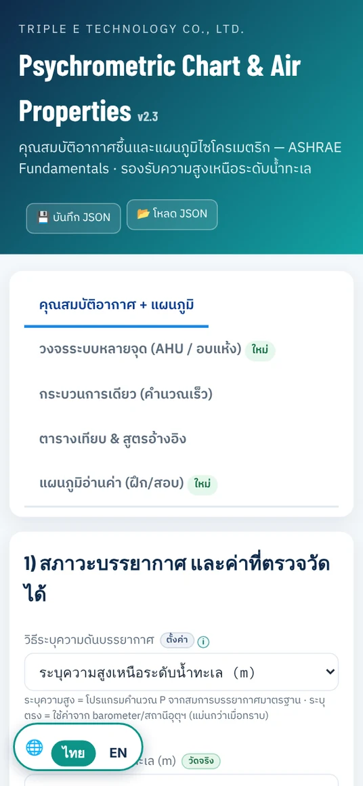
ใช้บนมือถือได้ — แท็บและการ์ดเรียงเป็นคอลัมน์เดียว
ปุ่ม ไทย | EN ลอยอยู่ด้านล่าง กดสลับภาษาได้ ค่าที่กรอกไว้ไม่หาย
ป้าย วัดจริง = ค่าจากเครื่องวัด · ออกแบบ = ค่าจากแบบหรือป้ายเครื่อง · ตั้งค่า = เลือกเอง · คำนวณ = เครื่องมือเติมให้
ใต้ทุกช่องมีคำอธิบายสีเทา บอกช่วงค่าปกติและเครื่องวัดที่ใช้
💡 เคล็ดลับ
แผนภูมิกว้าง — บนมือถือให้หมุนจอเป็นแนวนอน
คำศัพท์ 8 คำที่ต้องรู้ก่อนเริ่ม
คู่มือใช้งาน · แผนภูมิไซโครเมตริกและคุณสมบัติอากาศ (Psychrometric Chart & Air Properties) · ระดับ Free
5 / 30
| คำ | ความหมายแบบสั้น | จำง่าย ๆ |
|---|---|---|
| DB กระเปาะแห้ง | อุณหภูมิอากาศที่เทอร์โมมิเตอร์ธรรมดาอ่านได้ | อุณหภูมิที่เรารู้สึก |
| WB กระเปาะเปียก | อุณหภูมิที่อ่านได้เมื่อหุ้มกระเปาะด้วยผ้าเปียกแล้วมีลมผ่าน | ยิ่งแห้ง WB ยิ่งต่ำกว่า DB |
| RH ความชื้นสัมพัทธ์ | อากาศมีไอน้ำอยู่กี่ % ของปริมาณสูงสุดที่อุณหภูมินั้นรับได้ | 100 % = อิ่มตัว |
| DP จุดน้ำค้าง | อุณหภูมิที่อากาศเย็นลงถึงแล้วไอน้ำเริ่มกลั่นเป็นหยด | ผิวเย็นกว่า DP = เหงื่อเกาะ |
| W อัตราส่วนความชื้น | น้ำหนักไอน้ำต่ออากาศแห้ง 1 kg (g/kg) | ปริมาณน้ำจริงในอากาศ |
| h เอนทัลปี | พลังงานความร้อนรวมของอากาศชื้น (kJ/kg อากาศแห้ง) | ใช้คิดภาระคอยล์ |
| v ปริมาตรจำเพาะ | ปริมาตรของอากาศต่ออากาศแห้ง 1 kg (m³/kg) | แปลง m³/h เป็น kg/h |
| SHR | สัดส่วนความร้อนสัมผัสต่อความร้อนรวมของคอยล์ | ต่ำ = ภาระความชื้นมาก |
💡 เคล็ดลับ
รู้ค่า 2 ค่าใดก็ได้ (ที่ความดันบรรยากาศหนึ่ง) ก็หาค่าที่เหลือได้ทั้งหมด — นี่คือหน้าที่ของแผนภูมิไซโครเมตริก
เตรียมข้อมูลก่อนเริ่ม
คู่มือใช้งาน · แผนภูมิไซโครเมตริกและคุณสมบัติอากาศ (Psychrometric Chart & Air Properties) · ระดับ Free
6 / 30
| แท็บ | ข้อมูลที่ต้องมี | แหล่งข้อมูล | ค่าอาคาร A |
|---|---|---|---|
| คุณสมบัติอากาศ | ความสูงของพื้นที่เหนือระดับน้ำทะเล (หรือความดันบรรยากาศ) | แผนที่ · บารอมิเตอร์ | 0 m |
| คุณสมบัติอากาศ | ค่าที่วัดได้ 2 ค่า เช่น DB + RH หรือ DB + WB | เครื่องวัดอุณหภูมิ-ความชื้น · สลิงไซโครมิเตอร์ | 35 °C · 60 % |
| กระบวนการเดียว | อากาศเข้าคอยล์: DB · RH · อัตราการไหล | วัดที่ช่องลมกลับ/ลมผสม · เครื่องวัดลม | 27 °C · 55 % · 5,000 m³/h |
| กระบวนการเดียว | อากาศออกจากคอยล์: DB · RH | วัดหลังคอยล์ | 13 °C · 95 % |
| วงจรระบบ | ภาระห้อง · สภาวะห้อง · สภาวะภายนอก · สัดส่วนลมภายนอก · อุณหภูมิลมจ่าย | แบบออกแบบ หรือผลตรวจวัด | ค่าตัวอย่างของแม่แบบ |
⚠️ ระวัง
วัด DB และ RH ที่จุดเดียวกัน เวลาเดียวกัน — ค่าคนละจุดเอามาจับคู่กันไม่ได้
ขั้นที่ 1
ตั้งความดันบรรยากาศ และกรอกค่าที่วัดได้ 2 ค่า
คู่มือใช้งาน · แผนภูมิไซโครเมตริกและคุณสมบัติอากาศ (Psychrometric Chart & Air Properties) · ระดับ Free
7 / 30
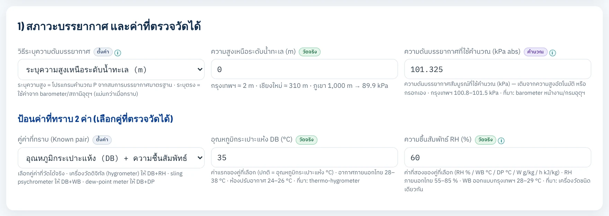
1
2
3
4
5
6
1
วิธีระบุความดัน — จากความสูง หรือกรอกความดันโดยตรง
2
ความสูงเหนือระดับน้ำทะเล (m)
3
ความดันบรรยากาศที่ใช้คำนวณ — เครื่องมือเติมให้ (101.325 kPa)
4
คู่ค่าที่ทราบ — มี 6 แบบ เลือกให้ตรงกับเครื่องวัด
5
ค่าแรก (DB 35 °C)
6
ค่าที่สอง (RH 60 %)
เครื่องวัดดิจิทัลให้ DB + RH · สลิงไซโครมิเตอร์ให้ DB + WB · เครื่องวัดจุดน้ำค้างให้ DB + DP
ชื่อช่องค่าที่สองเปลี่ยนตามคู่ที่เลือก
ขั้นที่ 2
อ่านคุณสมบัติอากาศทั้งหมด
คู่มือใช้งาน · แผนภูมิไซโครเมตริกและคุณสมบัติอากาศ (Psychrometric Chart & Air Properties) · ระดับ Free
8 / 30
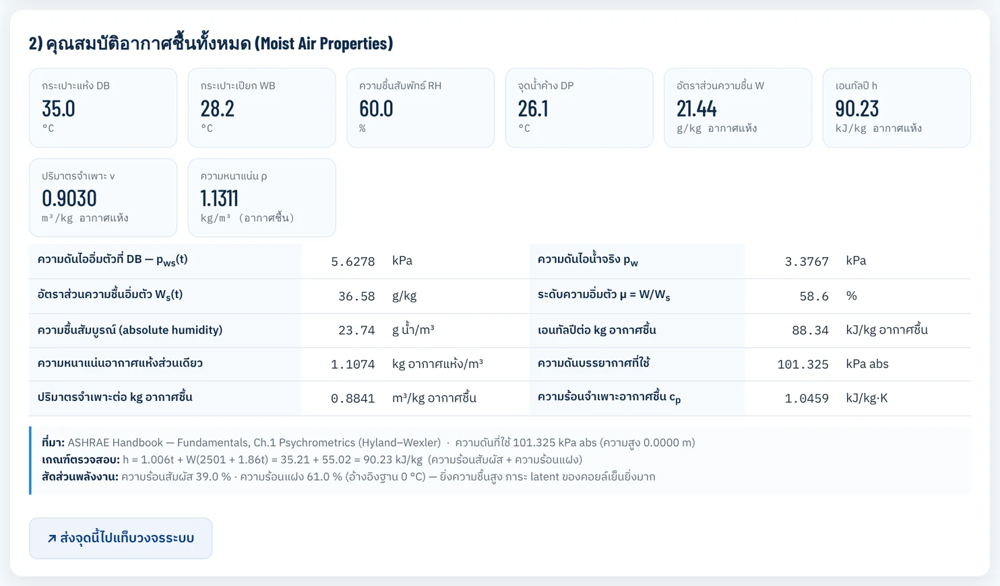
1
2
3
4
1
8 ค่าหลัก: WB 28.2 °C · DP 26.1 °C · W 21.44 g/kg · h 90.23 kJ/kg · v 0.9030 m³/kg · ρ 1.1311 kg/m³
2
ค่ารายละเอียด: ความดันไอน้ำ 3.3767 kPa · ความชื้นสัมบูรณ์ 23.74 g/m³ ฯลฯ
3
ที่มาและการตรวจสอบ: ความร้อนสัมผัส 39.0 % · ความร้อนแฝง 61.0 %
4
ส่งจุดนี้ไปใช้ในแท็บวงจรระบบ
อากาศภายนอก 35 °C RH 60 %: ผิวที่เย็นกว่า 26.1 °C จะมีหยดน้ำเกาะ
พลังงานในอากาศนี้เป็นความร้อนแฝง (ความชื้น) มากกว่าครึ่ง — ลมภายนอกรั่วเข้าอาคารจึงเป็นภาระหนักของคอยล์
ขั้นที่ 3
ดูจุดสภาวะบนแผนภูมิ
คู่มือใช้งาน · แผนภูมิไซโครเมตริกและคุณสมบัติอากาศ (Psychrometric Chart & Air Properties) · ระดับ Free
9 / 30
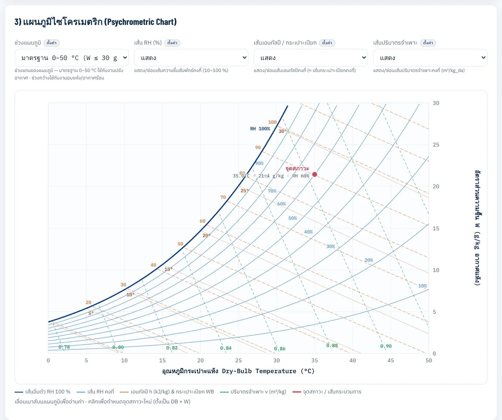
1
2
3
4
5
1
ช่วงแผนภูมิ — งานปรับอากาศ · อากาศเย็น · อุณหภูมิสูง/เครื่องอบแห้ง
2
แสดง/ซ่อนเส้น RH
3
แสดง/ซ่อนเส้นเอนทัลปี / กระเปาะเปียก
4
แสดง/ซ่อนเส้นปริมาตรจำเพาะ
5
แผนภูมิ — จุดแดงคือสภาวะที่กรอก
แกนนอน = DB · แกนตั้งขวา = W · เส้นโค้งซ้ายสุด = อิ่มตัว (RH 100 %)
เลื่อนเมาส์บนแผนภูมิเพื่ออ่านค่า · คลิกเพื่อย้ายจุดสภาวะ (ช่องกรอกเปลี่ยนเป็น DB + W)
ลองเปลี่ยนค่า (What-if): ความชื้นสัมพัทธ์ที่ 35 °C
คู่มือใช้งาน · แผนภูมิไซโครเมตริกและคุณสมบัติอากาศ (Psychrometric Chart & Air Properties) · ระดับ Free
10 / 30
| RH (%) | WB (°C) | DP (°C) | W (g/kg) | h (kJ/kg) |
|---|---|---|---|---|
| 40 | 23.9 | 19.4 | 14.13 | 71.47 |
| 60 (อาคาร A) | 28.2 | 26.1 | 21.44 | 90.23 |
| 80 | 31.8 | 31.0 | 28.92 | 109.42 |
ทำเอง: แก้ช่อง RH → อ่านผล → แก้กลับเป็น 60
อุณหภูมิเท่ากัน แต่ RH 80 % มีน้ำในอากาศเป็นสองเท่าของ RH 40 % และเอนทัลปีสูงกว่ามาก
RH ตัวเดียวบอกปริมาณน้ำไม่ได้ — ต้องดู W หรือ DP คู่กับอุณหภูมิเสมอ
ลองเปลี่ยนค่า (What-if): ความสูงของพื้นที่
คู่มือใช้งาน · แผนภูมิไซโครเมตริกและคุณสมบัติอากาศ (Psychrometric Chart & Air Properties) · ระดับ Free
11 / 30
| ความสูง (m) | ความดัน (kPa) | W (g/kg) | h (kJ/kg) | v (m³/kg) | ภาระคอยล์ 5,000 m³/h (kW) |
|---|---|---|---|---|---|
| 0 (อาคาร A) | 101.325 | 21.44 | 90.23 | 0.9030 | 36.92 |
| 310 | 97.656 | 22.28 | 92.37 | 0.9382 | 36.09 |
| 1,000 | 89.875 | 24.28 | 97.51 | 1.0226 | 34.34 |
ทำเอง: แก้ช่องความสูง → อ่านผล → แก้กลับเป็น 0
ที่สูงขึ้น อากาศบางลง (v มากขึ้น) — ลมปริมาตรเท่ากันมีมวลน้อยลง ภาระคอยล์จึงลดลง
DB และ RH เท่าเดิม แต่ W และ h เปลี่ยน — แผนภูมิระดับน้ำทะเลใช้กับพื้นที่สูงไม่ได้
💡 เคล็ดลับ
ความดันที่ตั้งในแท็บแรกถูกส่งไปแท็บกระบวนการเดียวให้เอง
ข้อความเตือนเมื่อค่าที่กรอกเป็นไปไม่ได้
คู่มือใช้งาน · แผนภูมิไซโครเมตริกและคุณสมบัติอากาศ (Psychrometric Chart & Air Properties) · ระดับ Free
12 / 30
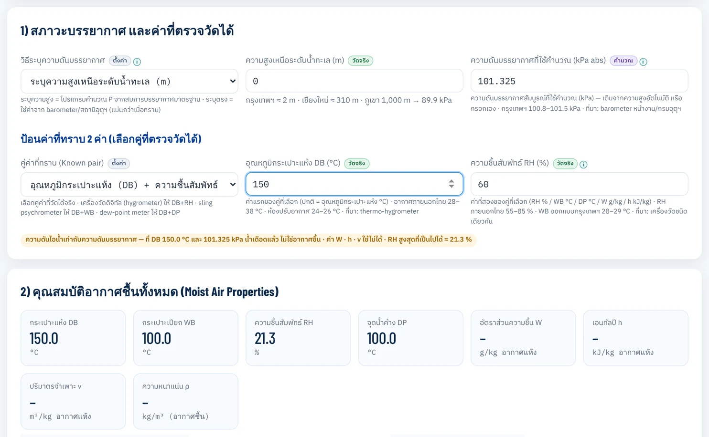
RH นอกช่วง 0–100 % · WB หรือ DP สูงกว่า DB · สภาวะเกินเส้นอิ่มตัว — เครื่องมือปรับให้เป็นค่าที่เป็นไปได้แล้วขึ้นป้ายเหลืองบอก
DB สูงกว่าจุดเดือดของน้ำ แล้วความชื้นที่กรอกทำให้ไอน้ำเต็มความดันบรรยากาศ (ภาพ: 150 °C RH 60 %) — ขึ้นป้ายเตือน บอก RH สูงสุดที่เป็นไปได้ และไม่แสดง W · h · v
ความสูงนอกช่วง −5,000 ถึง 11,000 m — ขึ้นป้ายเตือนให้เลือก "ระบุความดันโดยตรง" แล้วกรอกค่าจากบารอมิเตอร์
⚠️ ระวัง
เห็นป้ายเหลือง = ผลที่แสดงไม่ใช่ค่าที่กรอก — กลับไปตรวจค่าที่วัดและคู่ค่าที่เลือก
ขั้นที่ 4
แท็บกระบวนการเดียว: เลือกกระบวนการและกรอกค่า
คู่มือใช้งาน · แผนภูมิไซโครเมตริกและคุณสมบัติอากาศ (Psychrometric Chart & Air Properties) · ระดับ Free
13 / 30
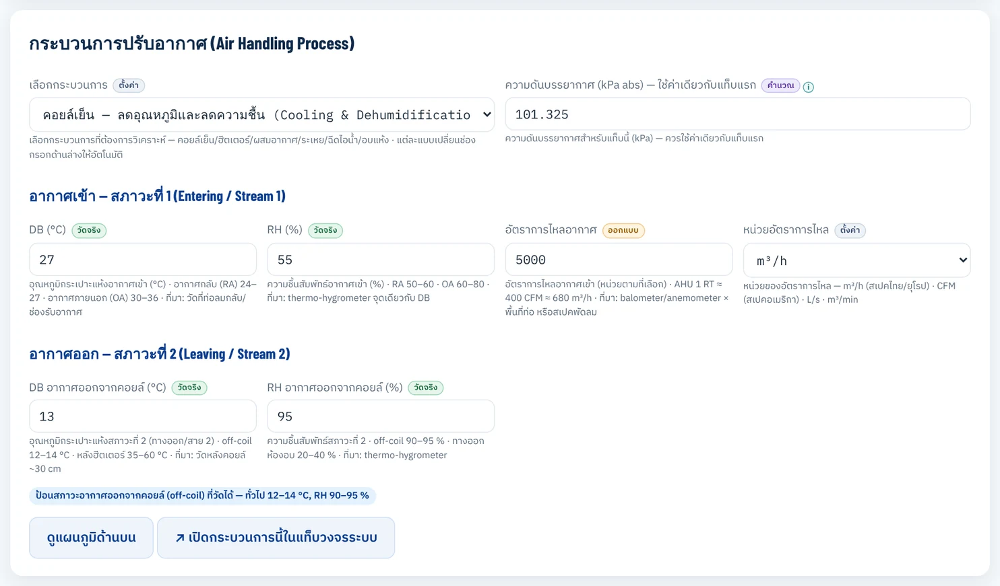
1
2
3
4
5
6
7
8
1
เลือกกระบวนการ — 6 แบบ (ช่องกรอกเปลี่ยนตาม)
2
ความดันบรรยากาศ — ใช้ค่าเดียวกับแท็บแรก
3
อากาศเข้า: DB
4
อากาศเข้า: RH
5
อัตราการไหลอากาศ
6
หน่วยอัตราการไหล (m³/h · CMM · m³/s · cfm · L/h)
7
อากาศออกจากคอยล์: DB
8
อากาศออกจากคอยล์: RH
อัตราการไหลคิดที่สภาวะอากาศเข้า — วัดลมที่จุดไหน ให้กรอกสภาวะของจุดนั้นเป็นอากาศเข้า
ขั้นที่ 5
อ่านภาระคอยล์เย็น
คู่มือใช้งาน · แผนภูมิไซโครเมตริกและคุณสมบัติอากาศ (Psychrometric Chart & Air Properties) · ระดับ Free
14 / 30
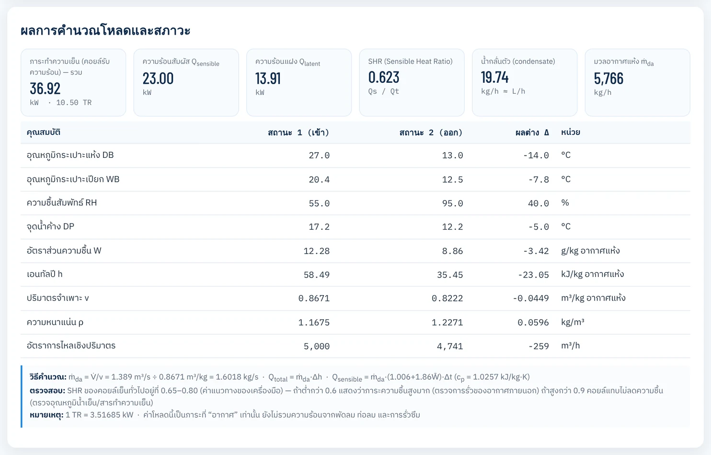
1
2
3
1
ภาระรวม 36.92 kW = 10.50 TR · สัมผัส 23.00 kW · แฝง 13.91 kW · SHR 0.623 · น้ำกลั่นตัว 19.74 kg/h · มวลอากาศแห้ง 5,766 kg/h
2
ตารางเทียบสภาวะเข้า–ออก และผลต่าง
3
วิธีคำนวณ · ข้อสังเกต · หมายเหตุ
เอนทัลปีลดจาก 58.49 เหลือ 35.45 kJ/kg · ความชื้นลดจาก 12.28 เหลือ 8.86 g/kg
ภาระนี้เป็นภาระที่อากาศเท่านั้น — ยังไม่รวมความร้อนจากพัดลม ท่อลม และการรั่วซึม (หมายเหตุของเครื่องมือ)
💡 เคล็ดลับ
เครื่องมือให้แนวทาง: SHR ของคอยล์เย็นทั่วไป 0.65–0.80 — ต่ำกว่า 0.6 ให้ตรวจการรั่วของอากาศภายนอก
เส้นกระบวนการบนแผนภูมิ
คู่มือใช้งาน · แผนภูมิไซโครเมตริกและคุณสมบัติอากาศ (Psychrometric Chart & Air Properties) · ระดับ Free
15 / 30
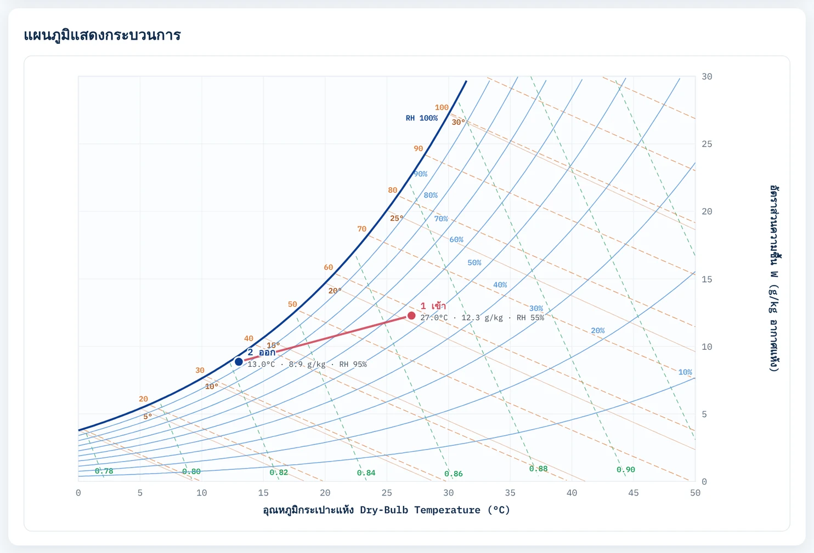
จุด 1 เข้า (แดง) → จุด 2 ออก (น้ำเงิน) — เส้นเฉียงลงซ้าย = เย็นลงและแห้งลง
จุดออกอยู่ชิดเส้นอิ่มตัว — เป็นลักษณะปกติของอากาศหลังคอยล์เย็น
เส้นแนวนอน = ความชื้นไม่เปลี่ยน (ให้ความร้อนหรือทำความเย็นแบบสัมผัส) · เส้นขึ้นลงตามแนว WB = การระเหย
💡 เคล็ดลับ
ฝึกอ่านทิศของเส้น: ซ้าย = เย็นลง · ลง = แห้งลง · ขวา = ร้อนขึ้น · ขึ้น = ชื้นขึ้น
ลองเปลี่ยนค่า (What-if): อุณหภูมิอากาศออกจากคอยล์
คู่มือใช้งาน · แผนภูมิไซโครเมตริกและคุณสมบัติอากาศ (Psychrometric Chart & Air Properties) · ระดับ Free
16 / 30
| อากาศออก (RH 95 %) | ภาระรวม (kW) | สัมผัส (kW) | แฝง (kW) | SHR | น้ำกลั่นตัว (kg/h) |
|---|---|---|---|---|---|
| 15 °C | 28.58 | 19.74 | 8.85 | 0.690 | 12.54 |
| 13 °C (อาคาร A) | 36.92 | 23.00 | 13.91 | 0.623 | 19.74 |
| 11 °C | 44.67 | 26.26 | 18.41 | 0.588 | 26.13 |
ทำเอง: แก้ช่อง DB อากาศออก → อ่านผล → แก้กลับเป็น 13
ลมออกยิ่งเย็น คอยล์ยิ่งดึงความชื้นมาก — ภาระแฝงและน้ำทิ้งเพิ่มเร็วกว่าภาระสัมผัส
ลมปริมาณเท่าเดิม ลมออกเย็นลง 2 °C ภาระคอยล์เพิ่มจาก 36.92 เป็น 44.67 kW — ไม่ควรตั้งลมจ่ายเย็นเกินที่ห้องต้องการ
กระบวนการอื่น: ตัวอย่างการผสมอากาศ 2 สาย
คู่มือใช้งาน · แผนภูมิไซโครเมตริกและคุณสมบัติอากาศ (Psychrometric Chart & Air Properties) · ระดับ Free
17 / 30
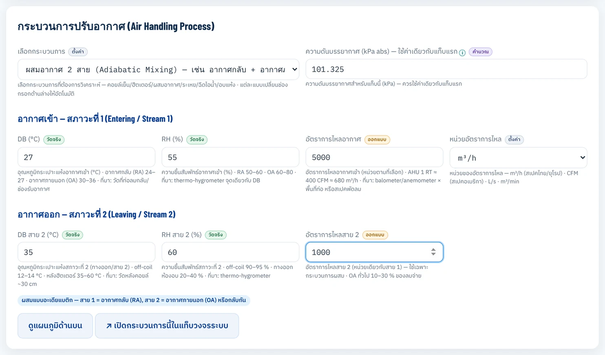
1
2
3
4
1
เลือก ผสมอากาศ 2 สาย — ชื่อช่องด้านล่างเปลี่ยนเป็น "สาย 2"
2
สาย 2 (อากาศภายนอก): DB 35 °C
3
สาย 2: RH 60 %
4
อัตราการไหลสาย 2: 1,000 m³/h
ผล: อากาศผสม 28.3 °C RH 56.9 % · W 13.76 g/kg · h 63.61 kJ/kg
สาย 2: 35.0 °C, RH 60.0 %, W 21.44 g/kg, ṁ 1,107 kg/h — สัดส่วนอากาศสาย 2 = 16.1 %
การผสมไม่มีภาระความร้อน — เครื่องมือแสดงภาระ 0 kW ใช้เฉพาะสภาวะผสมไปคิดคอยล์ต่อ
💡 เคล็ดลับ
กระบวนการที่เลือกได้: คอยล์เย็น · ให้ความร้อน · ผสมอากาศ · ระบายความร้อนแบบระเหย · เพิ่มความชื้นด้วยไอน้ำ · อบแห้ง
ขั้นที่ 6
แท็บวงจรระบบหลายจุด: สร้างจากแม่แบบ
คู่มือใช้งาน · แผนภูมิไซโครเมตริกและคุณสมบัติอากาศ (Psychrometric Chart & Air Properties) · ระดับ Free
18 / 30
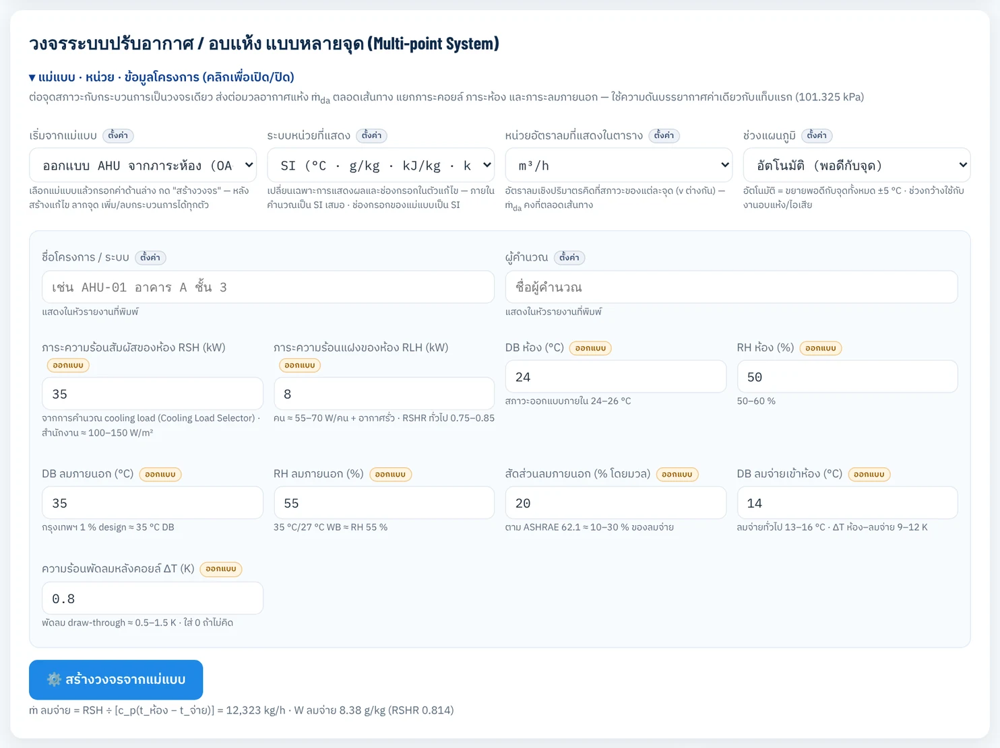
1
2
3
4
5
6
1
เลือกแม่แบบ — ออกแบบ AHU · ตรวจวัดหน้างาน · ลมภายนอก 100 % · เครื่องอบแห้ง · เริ่มว่าง
2
ระบบหน่วย SI / IP
3
หน่วยอัตราลม
4
ช่องกรอกของแม่แบบ: ภาระห้อง · สภาวะห้อง · สภาวะภายนอก · สัดส่วนลมภายนอก · อุณหภูมิลมจ่าย
5
กด สร้างวงจรจากแม่แบบ
6
ลมจ่ายที่ต้องใช้ 12,323 kg/h
แท็บนี้ต่อหลายกระบวนการเป็นวงจรเดียว: ลมภายนอก + ลมกลับ → ผสม → คอยล์ → พัดลม → ห้อง
แผนภูมิวงจร: จุดและเส้นกระบวนการ
คู่มือใช้งาน · แผนภูมิไซโครเมตริกและคุณสมบัติอากาศ (Psychrometric Chart & Air Properties) · ระดับ Free
19 / 30
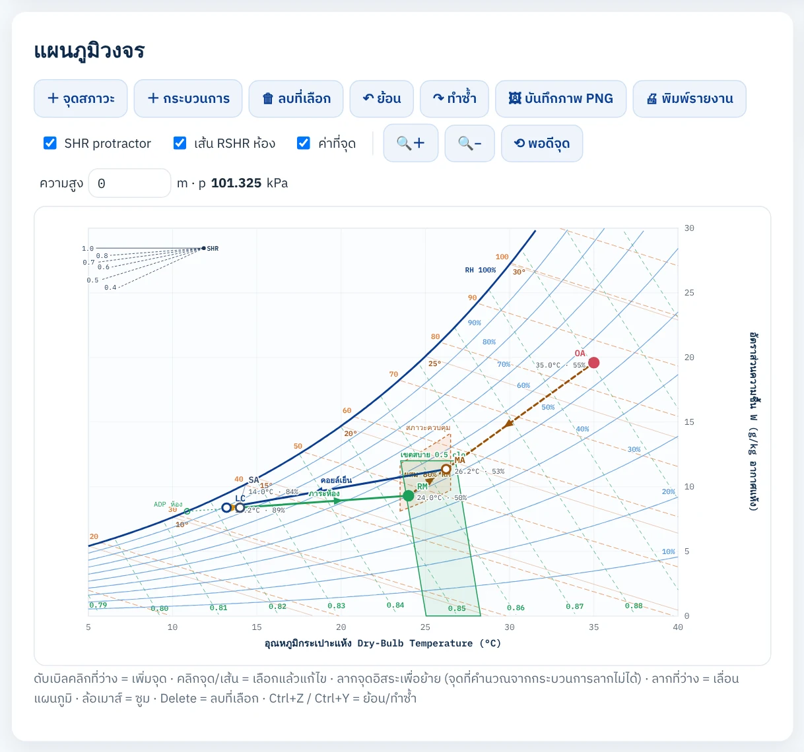
1
2
3
1
เพิ่มจุดสภาวะ / เพิ่มกระบวนการ / ลบ / ย้อน / ทำซ้ำ
2
บันทึกภาพ PNG · พิมพ์รายงาน
3
แผนภูมิ — ลากจุดเพื่อเปลี่ยนสภาวะได้ (จุดที่คำนวณจากกระบวนการลากไม่ได้)
แม่แบบ AHU สร้างให้ 5 จุด: OA ลมภายนอก · RM ห้อง · MA ลมผสม · LC หลังคอยล์ · SA ลมจ่าย
คลิกจุดหรือเส้นเพื่อแก้ค่าในกล่อง "แก้ไขรายการที่เลือก" ด้านขวา
ผลลัพธ์ทั้งวงจร: ตัวเลขสรุปและจุดสภาวะ
คู่มือใช้งาน · แผนภูมิไซโครเมตริกและคุณสมบัติอากาศ (Psychrometric Chart & Air Properties) · ระดับ Free
20 / 30
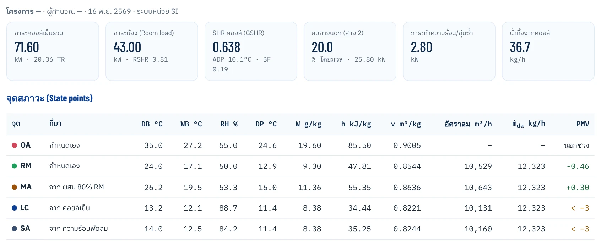
1
2
1
ภาระคอยล์รวม 71.60 kW = 20.36 TR · ภาระห้อง 43.00 kW · SHR คอยล์ 0.638 · ลมภายนอก 20.0 % = 25.80 kW · น้ำทิ้ง 36.7 kg/h
2
ตารางจุดสภาวะ: DB · WB · RH · DP · W · h · v · อัตราลม ของทุกจุด
ลมผสม MA 26.2 °C RH 53.3 % → หลังคอยล์ LC 13.2 °C → ลมจ่าย SA 14.0 °C
ลมภายนอกแค่ 20.0 % ของลมจ่าย แต่เป็นภาระ 25.80 จาก 71.60 kW
ผลลัพธ์ทั้งวงจร: ภาระรายกระบวนการ และการตรวจสมดุล
คู่มือใช้งาน · แผนภูมิไซโครเมตริกและคุณสมบัติอากาศ (Psychrometric Chart & Air Properties) · ระดับ Free
21 / 30
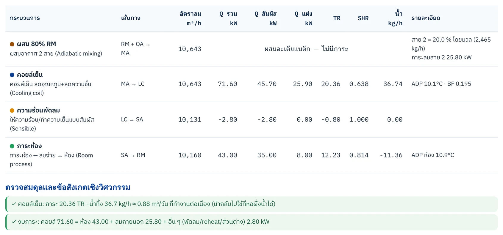
1
2
1
ตารางกระบวนการ: Q รวม · Q สัมผัส · Q แฝง · TR · SHR · น้ำ ของแต่ละช่วง
2
ตรวจสมดุล: ภาระคอยล์ = ห้อง + ลมภายนอก + อื่น ๆ (พัดลม/อุ่นซ้ำ)
งบภาระของอาคาร A: 71.60 = 43.00 + 25.80 + 2.80 kW
แถบสีเขียว = สมดุลลงตัว · แถบสีเหลืองหรือแดง = มีจุดที่ควรตรวจ
การ์ดล่างสุดของแท็บนี้ใช้กำหนดกรอบสภาวะควบคุม และวางข้อมูลจากเครื่องบันทึก (data logger) ลงบนแผนภูมิ
ขั้นที่ 7
แท็บตารางเทียบ & สูตรอ้างอิง
คู่มือใช้งาน · แผนภูมิไซโครเมตริกและคุณสมบัติอากาศ (Psychrometric Chart & Air Properties) · ระดับ Free
22 / 30
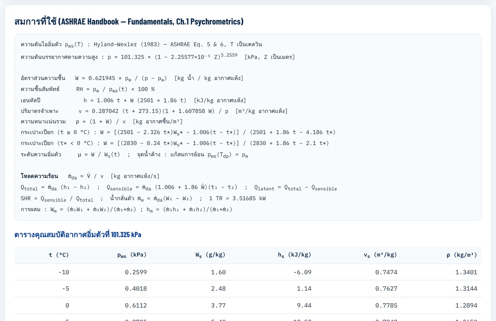
สูตรทุกสูตรที่เครื่องมือใช้ พร้อมที่มา (ASHRAE Handbook — Fundamentals บทที่ 1)
ตารางคุณสมบัติอากาศอิ่มตัวที่ 101.325 kPa · ตารางความดันบรรยากาศตามความสูง · ค่าอ้างอิงที่ใช้บ่อยในงานตรวจวัด
ใช้ทวนผลด้วยมือ หรืออ้างอิงในรายงาน
💡 เคล็ดลับ
ทวนเร็ว: h = 1.006t + W(2501 + 1.86t) โดย W เป็น kg/kg — สูตรเดียวกับบรรทัด "เกณฑ์ตรวจสอบ" ในแท็บแรก
ขั้นที่ 8
แท็บแผนภูมิอ่านค่า: ตั้งค่าและพิมพ์
คู่มือใช้งาน · แผนภูมิไซโครเมตริกและคุณสมบัติอากาศ (Psychrometric Chart & Air Properties) · ระดับ Free
23 / 30
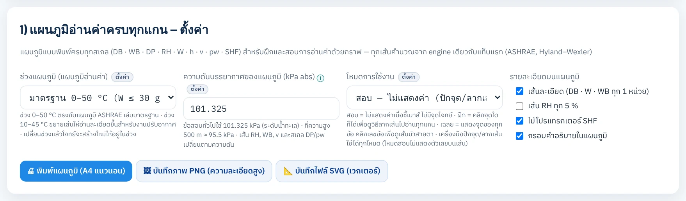
1
2
3
4
1
ช่วงแผนภูมิ
2
ความดันบรรยากาศของแผนภูมิ
3
โหมด: สอบ (ไม่แสดงค่า) · ฝึก (ชี้เมาส์อ่านค่า) · เฉลย
4
พิมพ์แผนภูมิ A4 แนวนอน · บันทึก PNG · บันทึก SVG
แผนภูมิแบบพิมพ์ มีสเกลครบทุกแกน: DB · WB · DP · RH · W · h · v · ความดันไอน้ำ · SHF
ใช้ฝึกอ่านค่าด้วยมือ หรือพิมพ์เป็นแผนภูมิเปล่าสำหรับห้องเรียน
เครื่องมือช่วยบนแผนภูมิ
คู่มือใช้งาน · แผนภูมิไซโครเมตริกและคุณสมบัติอากาศ (Psychrometric Chart & Air Properties) · ระดับ Free
24 / 30
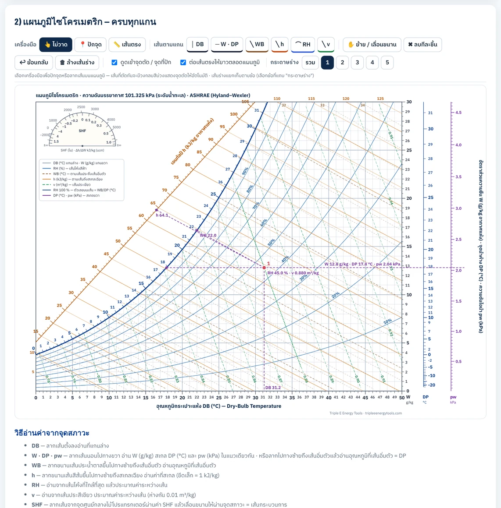
1
2
1
แถบเครื่องมือ: ปักจุด · เส้นตรง · เส้นตามแกน DB / W·DP / WB / h / RH / v · ย้าย · ลบ · ย้อนกลับ
2
แผนภูมิ — เส้นที่ตัดกันมีวงกลมสีม่วงแสดงจุดตัดให้เอง
วิธีหาจุดสภาวะ: ลากเส้นตามแกนของค่าที่รู้ 2 ค่า → จุดตัด = สภาวะ → ลากเส้นแกนอื่นผ่านจุดนั้นเพื่ออ่านค่าที่เหลือ
เส้นร่างแยกเก็บตามข้อ — เลือกข้อที่แถบ "กระดาษร่าง"
ชุดโจทย์ฝึกอ่านค่า
คู่มือใช้งาน · แผนภูมิไซโครเมตริกและคุณสมบัติอากาศ (Psychrometric Chart & Air Properties) · ระดับ Free
25 / 30
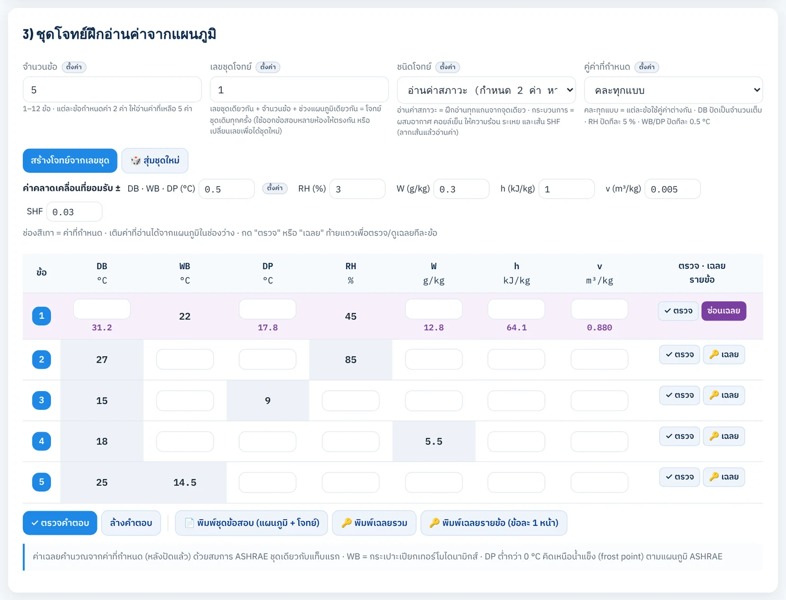
1
2
3
4
5
6
7
1
จำนวนข้อ
2
เลขชุดโจทย์ — เลขเดียวกันได้โจทย์ชุดเดิม
3
ชนิดโจทย์: อ่านค่าสภาวะ / กระบวนการปรับอากาศ
4
คู่ค่าที่กำหนด
5
สร้างโจทย์จากเลขชุด
6
ช่องสีเทา = ค่าที่กำหนด · ช่องว่าง = เติมคำตอบ
7
ตรวจคำตอบ · พิมพ์ชุดข้อสอบ · พิมพ์เฉลย
ตัวอย่างข้อ 1 ของชุดที่ 1 (กดเฉลยแล้ว): DB | WB | DP | RH | W | h | v = 31.2 | 22 | 17.8 | 45 | 12.8 | 64.1 | 0.880
ตั้งค่าความคลาดเคลื่อนที่ยอมรับได้ เช่น อุณหภูมิ ± 0.5 °C
บันทึกงาน และเปิดงานเดิม
คู่มือใช้งาน · แผนภูมิไซโครเมตริกและคุณสมบัติอากาศ (Psychrometric Chart & Air Properties) · ระดับ Free
26 / 30
1
2
1
บันทึก JSON — เก็บค่าที่กรอกทุกแท็บเป็นไฟล์ 1 ไฟล์
2
โหลด JSON — เปิดไฟล์งานเดิมกลับมาทำต่อ
ตั้งชื่อไฟล์ตามงาน เช่น อาคารA_AHU-01_2569-11-16.json
ภาพแผนภูมิ: แท็บวงจรระบบและแท็บแผนภูมิอ่านค่ามีปุ่มบันทึกภาพ PNG และปุ่มพิมพ์
ปิดหน้าเว็บโดยไม่บันทึก JSON ค่าที่กรอกจะหาย
ข้อผิดพลาดที่พบบ่อย
คู่มือใช้งาน · แผนภูมิไซโครเมตริกและคุณสมบัติอากาศ (Psychrometric Chart & Air Properties) · ระดับ Free
27 / 30
✗ ดู RH ตัวเดียว
✓ RH เท่ากันแต่อุณหภูมิต่างกัน น้ำในอากาศไม่เท่ากัน — ดู W หรือ DP
✗ ลืมตั้งความสูงของพื้นที่
✓ พื้นที่สูงต้องกรอกความสูง — W · h · v เปลี่ยนตามความดัน
✗ จับคู่ค่าคนละจุดวัด
✓ DB กับ RH ต้องวัดจุดเดียวกัน เวลาเดียวกัน
✗ กรอกอัตราลมไม่ตรงกับสภาวะเข้า
✓ วัดลมที่จุดไหน กรอกสภาวะจุดนั้นเป็นอากาศเข้า
✗ เลือกคู่ค่าผิด
✓ วัดด้วยสลิงไซโครมิเตอร์ต้องเลือก DB + WB ไม่ใช่ DB + RH
✗ เอาภาระอากาศเป็นขนาดเครื่องทำความเย็น
✓ ยังไม่รวมพัดลม ท่อลม และการรั่วซึม
✗ บวกภาระของการผสมอากาศ
✓ การผสมไม่มีภาระ — ใช้แค่สภาวะผสมไปคิดคอยล์
✗ ไม่สนใจป้ายเหลือง
✓ ป้ายเหลือง = เครื่องมือปรับค่าหรือค่าที่กรอกขัดกับกระบวนการ
แบบฝึกหัด: อาคาร B
คู่มือใช้งาน · แผนภูมิไซโครเมตริกและคุณสมบัติอากาศ (Psychrometric Chart & Air Properties) · ระดับ Free
28 / 30
| ข้อมูล | ค่า |
|---|---|
| แท็บแรก: เลือกคู่ค่า DB + WB | DB 30 °C · WB 24 °C |
| ความสูงของพื้นที่ | 0 m |
| แท็บกระบวนการเดียว: คอยล์เย็น — อากาศเข้า | 26 °C · RH 60 % · 8,000 m³/h |
| อากาศออกจากคอยล์ | 14 °C · RH 92 % |
คำถาม — กรอกแล้วตอบ
1
อากาศ 30/24 °C: RH = ______ % · DP = ______ °C · W = ______ g/kg
2
ภาระคอยล์รวม = ______ kW = ______ TR
3
SHR = ______
4
น้ำกลั่นตัว = ______ kg/h
💡 เคล็ดลับ
ข้อ 1 ต้องเปลี่ยน "คู่ค่าที่ทราบ" เป็น DB + กระเปาะเปียก (WB) ก่อนกรอก
เฉลยแบบฝึกหัด อาคาร B
คู่มือใช้งาน · แผนภูมิไซโครเมตริกและคุณสมบัติอากาศ (Psychrometric Chart & Air Properties) · ระดับ Free
29 / 30
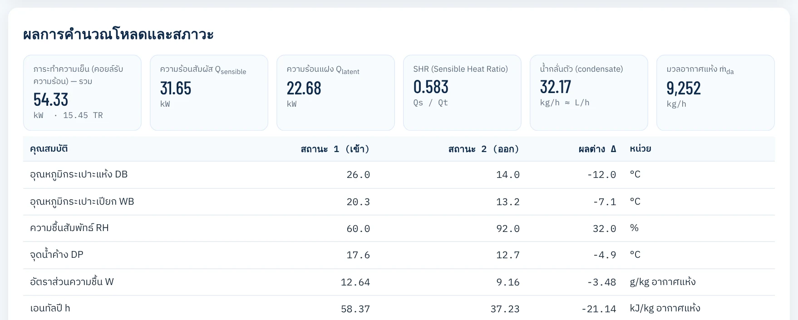
1) RH 61.1 % · DP 21.7 °C · W 16.34 g/kg (h 71.95 kJ/kg)
2) ภาระรวม 54.33 kW = 15.45 TR (สัมผัส 31.65 · แฝง 22.68 kW)
3) SHR 0.583
4) น้ำกลั่นตัว 32.17 kg/h
✓ ผ่าน
ได้ตัวเลขตรงกัน = ใช้เครื่องมือเป็นแล้ว · SHR ต่ำกว่า 0.6 — ตามแนวทางของเครื่องมือให้ตรวจการรั่วของอากาศภายนอก
สรุป 1 หน้า (พิมพ์ติดไว้ข้างคอมพิวเตอร์)
คู่มือใช้งาน · แผนภูมิไซโครเมตริกและคุณสมบัติอากาศ (Psychrometric Chart & Air Properties) · ระดับ Free
30 / 30
1
ความดัน
กรอกความสูงของพื้นที่
2
ค่าที่วัดได้
เลือกคู่ค่า → กรอก 2 ค่า
3
อ่านผล
WB · DP · W · h · v + จุดบนแผนภูมิ
4
กระบวนการเดียว
เลือกกระบวนการ → เข้า · ออก · อัตราลม
5
อ่านภาระ
kW · TR · SHR · น้ำกลั่นตัว
6
วงจรระบบ
เลือกแม่แบบ → สร้างวงจร → ตรวจสมดุล
7
ฝึกอ่านแผนภูมิ
โหมดฝึก/สอบ → สร้างโจทย์ → ตรวจ
8
บันทึก
JSON ทุกแท็บ · PNG / พิมพ์
อ่านผลแล้วตรวจ
☐
DB กับ RH วัดจุดเดียวกัน
☐
ตั้งความสูงของพื้นที่แล้ว
☐
อัตราลมตรงกับสภาวะเข้า
☐
ป้ายเหลือง = กลับไปตรวจค่า
☐
ภาระอากาศ ≠ ขนาดเครื่อง
อ.หนึ่ง กลับทวี / Aj. Nueng Klubtavee
tripleeenergytools.com
tripleeenergytools.com